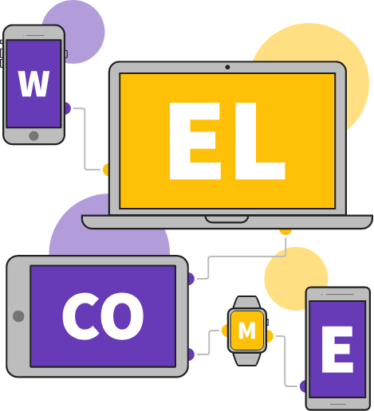
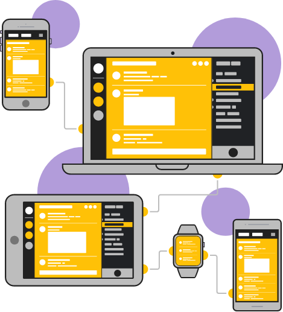
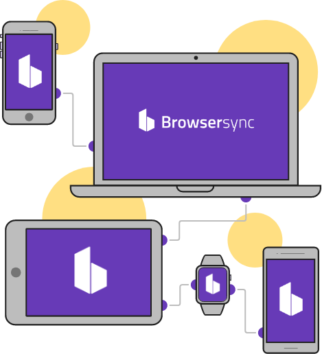
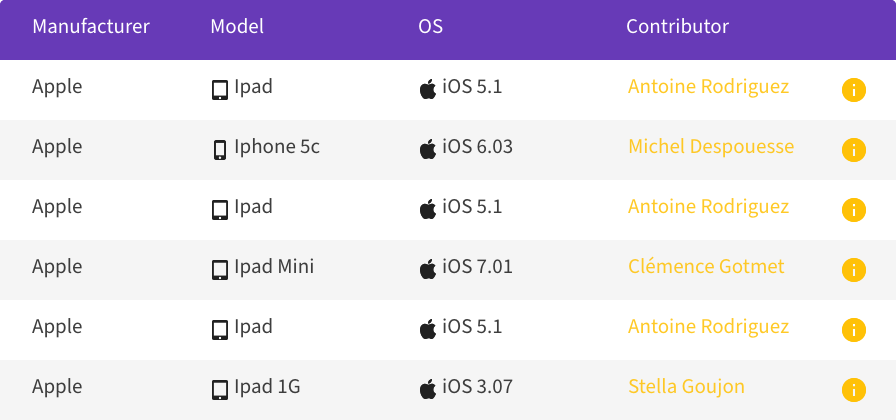
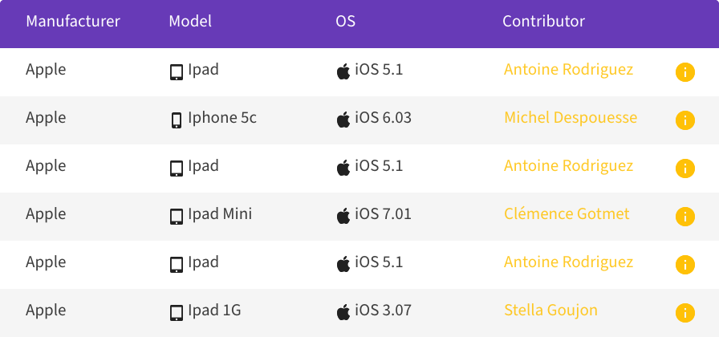

Ecv Device Lab
L’ECV fournit un laboratoire portatif pour les professionnels et tous ceux souhaitant une vérification de leur site Web.
Pour tout le monde !
Ce Device Lab est destiné à chaque personne souhaitant améliorer la compatibilité de son site web sur plusieurs tailles d'écran et plusieurs navigateurs.
Efficace & puissant !
Avec Browser Sync, vous pouvez régler votre site Web en temps réel sur tous les appareils. Et vous pouvez avoir des retours d’utilisateurs avec Silverback.
Partage!
Vous serez assisté par une équipe d'étudiants qui vous aidera dans ce processus de compatibilité grâce à un rapport en direct et papier.
Gratuit !
Que vous veniez nous rendre visite ou que nous passions chez vous, ce service est gratuit. En échange, vous pouvez donner un appareil que vous n’utilisez plus (ou utilisé si vous le souhaitez).

Devices.
 
